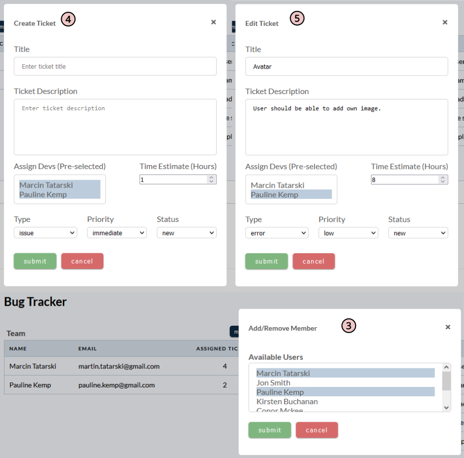
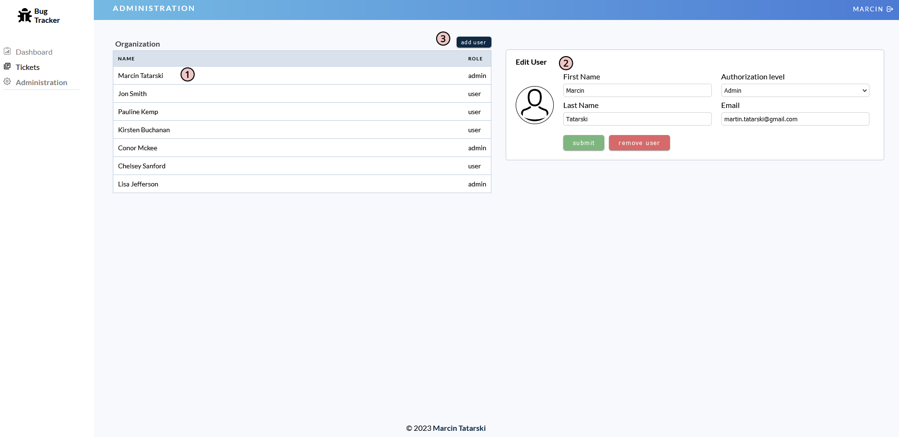

The Bug Tracker is a project management tool designed to help track and manage software errors. It's a tool that can be used by developers and software teams to log and monitor bugs in their software projects.
I built this tool using React for the front-end, Node/Express for the back-end, and MongoDB for the database. The Bug Tracker serves as a demonstration of my skills as a developer and my ability to create useful tools that can make a real difference in software development.
System Security and Database Management
The database used is MongoDB, which is a non-relational database management system (DBMS) that stores data in collections rather than tables.
The structure of the MongoDB database is organized into collections, which are similar to tables in a relational database. Each collection contains documents, which are analogous to rows in a table. However, unlike in a relational database where all rows must have the same structure, documents in MongoDB collections can have different fields and structures. This allows for greater flexibility and ease of scaling in the database.
I split my data into three models representing the collections in the database:
- The User model represents the collection of user data
- The Project model represents the collection of project data
- The Ticket model represents the collection of ticket data
To communicate with the MongoDB database, the application uses the Mongoose library, which is an Object Data Modeling (ODM) library for MongoDB and Node.js. Mongoose allows for easy creation and management of MongoDB schemas and provides a simple API for interacting with the database.
In terms of security measures, the User.js model has passwords hashed before being stored in the database using the bcrypt library, which is a commonly used library for password hashing. Additionally, sensitive fields like passwords are excluded from server responses when querying the database, adding an extra layer of security to the system.
Regarding security measures on the server side, the system includes authentication and authorization checks through the use of JWT tokens. The passwords are also encrypted in the database using hashing. Additionally, the controllers check for missing fields and duplicate emails to prevent malicious input from the client.
Lastly, I also restricted access to Administration route, so only admin account can access it.
Backup and Disaster Recovery Plan
Backup and disaster recovery plan relies on Atlast MongoDB's built-in backup features, which provide automated backups to Bug Tracker database on a regular basis.
Additionally, I am regularly exporting the data from Atlast MongoDB and store it locally as an extra precautionary measure. In case of a disaster, I can quickly restore the data from the backups provided by Atlast MongoDB or from local backup files.
Testing and Quality Assurance
I conducted manual testing of the Bug Tracker by going through the application and testing various scenarios, such as creating new user accounts, creating new projects, and submitting and resolving tickets. This allowed me to identify and fix any issues or bugs in the application before deployment.
Login/Register Page
The Bug Tracker has a Login page that's accessible to anyone. The Login page has two options: Sign-in and Register.
By default, new users can only register as a regular user, and admin accounts can only be created through the Administration Page. Users can switch between the login and registration screens at the bottom of the page 1.
When login or registering, users must fill in all required details. If they don't, they'll be prompted with an alert 2.
By default, the password is hidden, but users can click the eye icon 3 to reveal it.
To ensure safety for database, I've disabled for now registration, so the only way to access the app is if I provide the email and password.
Dashboard Page
The Dashboard Page is divided into four areas. On the right, there's a side menu 1 with links to other pages, and the Administration Page is only visible for admin accounts.
The heading displays the page title and the user who's logged in, with a logout icon on the side 2.
The main area shows a list of projects with a short description and the people assigned to them. The number of projects 3 is dynamically updated every time a project is added or removed. Clicking "Add New Project" 4 will open a pop-up modal window, where all fields need to be filled, or an alert will appear asking for all the information.
To edit or remove a project, users can click on the three dots 5 next to each project, which will display a menu with options to edit or remove the project. Selecting "edit project" will open another pop-up window with prefilled values for the selected project.
The pagination 6 is not displayed until there are at least six projects on the list.
The last area on the Dashboard shows pie charts 7 for the tickets. If the user doesn't have any tickets, no data will be displayed. Like the project list, the data on the pie chart is dynamically updated.
The Dashboard "Add New Project" 4 and "Edit Project" 5 pop-up modal windows. The user must fill in all required details. If they don't, they'll be prompted with an alert.
Project Page
The Project Page displays a list of assigned team members 1 and tickets list 2 created for that project.
Users can assign or remove team members to the project by clicking on the "members" 3 button. The same goes to adding new ticket 4 to the list.
Like the Dashboard project list users can edit 5, or remove tickets, and the pagination is not displayed until at least six tickets are added.
The bottom part of the screen displays information 6 about the selected ticket, which is hidden by default. Users need to click on the ticket title to view it. The information includes a short description of the issue, the assigned team member, and the ticket status. Additionally, each ticket has a comments section 7 where anyone can add comments, but only admin accounts can delete them. The comments section also has pagination, but is not displayed until there are at least four comments added.
Lastlt the tickets list and comments are sorted in ascending order.
The Project "Create Ticket" 4 and "Edit Ticket" 5 pop-up modal windows. The user must fill in all required details. If they don't, they'll be prompted with an alert.
Tickets Page
The Ticket Page shows a list of all created tickets, and each user has their own list of tickets 1.
At the top of the list, there is a filter section with a search box 2. Typing text in the search box will dynamically show the search results. Users can also restrict the search to a specific type of ticket and clear the filter if needed. The pagination for the Ticket Page is set to display ten tickets per page.
Clicking on any ticket title from the list redirects users to the project where the ticket was created. The Project Page layout is similar to the Ticket Page, but with some small adjustments. The displays information about the ticket is preselected, and the buttons for adding or removing members and creating a new ticket are blocked 3. This is because only one ticket is displayed, and pagination is hidden. However, users can still edit the ticket and leave comments.
Administration Page
The Administration Page is divided into two columns. The left column displays a list of all registered users 1. By clicking on any of the names, you can view and modify that user's information 2. If necessary, you can also remove a user from the database.
As with all input fields the user must fill in all required details. If they don't, they'll be prompted with an alert.
As an admin, you also have the ability to add new users 3.
Error Page
If a user tries to access a route that doesn't exist, the system will redirect them to the Error Page. This page will display a message stating that the requested page is not available. This provides a clear explanation to the user as to why they cannot access the desired content and helps to create a more seamless user experience. Moreover, the Error Page includes a link to the Dashboard Page or, if the user is not logged in, to the Login Page.
Wrap-up
Developing the Bug Tracker project has been a challenging yet rewarding experience. From designing the user interface to implementing complex backend logic, I encountered several roadblocks along the way.
However, I didn't give up and found ways to overcome these obstacles with determination and resourcefulness. Eventually, I successfully delivered a user-friendly and functional application. This experience taught me the significance of having good problem-solving skills and the value of persisting through tough situations.
It' also given me a chance to flex my development muscles and create something that can make a real difference in the world of software development.
I'm excited to continue iterating on this project and see where it takes me in my career as a developer.